Character (2026-09-23): the finished true-proportion COURTOIS character now runs through this whole library on the same simulation — see GK CHARACTER — COURTOIS INTEGRATION — REVIEW (gameplay-camera views, Mixed native-output composition, V6 42 + mirror 49, put-down, roll / throw / punt, catches / foot saves, close contact views, test keeper vs Courtois, full-precision regression).
Every render is the SKELETAL_3D backend drawing the same deterministic simulation the sprite backend draws; the simulation is never written by the presentation (gates below). The skinned test character is a MOTION-AUTHORING rig, not the shipped look. Gameplay-camera renders are the exact Touchline camera at 1:1 (60 fps APNG = real time; a GIF sits next to each for scrubbing). Close renders are for biomechanics only.
Sections: taxonomy · canonical motions · CATCH group v10 (sprite / old / new) · FOOT_SAVE spread block (v9 review) · facings / mirror / footwork · body proportions · real free play · verification · Astra package: review_artifacts/astra_gk_motion_reference/ · findings: review_artifacts/gk_motion_library/GK_MOTION_LIBRARY_FINDINGS.md
| motion | simulation states that select it | biomechanically distinct because | mirror | deterministic adaptation |
|---|---|---|---|---|
| FAR_DIVE (v6, frozen) | family AIRBORNE_DIVE, height class MID / HIGH / TOP | push-off into a flight arc, reach along the body axis, feet-first or side landing by the axis angle, full get-up + reposition | by keeper side (LEFT = mirror) | body-axis redirect to the committed target, launch arc through the solved full-extension pelvis, glove IK, landing style blend 35–60°, held-ball landing (hands stay on the ball, strong deceleration) |
| LOW_DIVE | AIRBORNE_DIVE, height class LOW-MID | the target is below the hip: the body launches sideways and goes horizontal (roll clamped at 82°, never inverted), both arms reach down along the pitch, side landing from a low arrival, side get-up | by side | same load / push keys as the far dive; low pelvis solve (side-lying height, arm along the ground); leg-tip IK when the simulation extends the lead leg; held variant |
| LOW_COLLAPSE | LOW_COLLAPSE (low ball inside the lateral envelope) | no flight: the near leg folds and the body drops onto the hip while the hands go down together; lands where it collapses | by side | ground plan: the recovery chain starts from the arrival pose; leg-tip IK; held variant; step-back reposition |
| FOOT_SAVE (v9: SPREAD BLOCK) | FOOT_SAVE (ankle-height ball beyond the stance, within the leg sweep) | emergency block: the centre of mass drops, both hips ABDUCT (saving leg ~72°, far leg ~60°, knees somewhat bent), the far foot steps out to a wide plant, arms wide and forward, chest open to the shooter; the body then commits onto the saving hip (side-sit, hand on the pitch) and recovers from the half-kneel — not a forward kick | by side | leg IK to the authoritative leg tip (reach-capped); one fixed world-space step-out plant; absorb with velocity-continuous descent; shared get-up from HALF_KNEEL |
| NEAR_BODY (catch group, v10) | NEAR_BODY_SAVE (feet planted, hands within arm + lean) | a step out and a torso lean, near-hand reach; a caught ball is cradled, brought to the chest and the lean straightens | by side | step-out plant, split hand targets on the ball line, cradle → absorb → control → straighten → upright hold, rise on a parry |
| CHEST_CATCH (catch group, v10) | CHEST_CATCH / SUPPORTED_CATCH | the production sprite chest catch: upright ready, small brace, arms open wide (elbows OUT), hands forward at chest height at contact, forearms wrap (shoulder adduction + elbow flexion), absorb to the chest, straighten, upright hold | symmetric | split hand targets either side of the ball line; after possession the hands are solved onto the rendered ball (outward elbow poles); the presentation ball blends from the authoritative catch point into the cradle |
| HIGH_CATCH (catch group, v10) | HIGH_CATCH | both hands up a ball's width apart, rise on the toes / small jump; the secured ball is brought down to the chest as the knees give; straighten; upright hold | symmetric | jump from the launch demand; cradle overhead, bring-down = absorb stage |
| GATHER (catch group, v10) | LOW_GATHER | the production sprite low gather: deep CROUCH (not a kneel), gloves to the ground, scoop, clutch to the belly, rise to the upright hold | symmetric | same possession lifecycle with a longer straighten (0.65 s) |
| FOOTWORK (procedural) | pre-shot root motion (SHUFFLE / CROSSOVER / STEP states) | — | — | odometer stepping: alternating foot plants from the root velocity (no sliding), lean into the travel |
| READY (procedural anticipation) | reaction latency; predicted crossing |lateral| < 0.30 m | — | — | symmetric ready crouch instead of the side load (blend to the side load above 0.70 m) |
the approved v6 far dive, frozen (fixture 42; LEFT mirror = fixture 49) · commit DIVE-HIGH (HIGH/FULL-STRETCH REACHABLE) at tick 38 · contact: HAND / WEAK PARRY (through) at tick 63, held False · phases: SET_CROUCH@0 → READ@28 → WEIGHT_SHIFT@31 → LOAD@35 → PLANT@41 → PUSH_OFF@43 → TOE_OFF@45 → EARLY_FLIGHT@47 → MID_FLIGHT@53 → FULL_EXTENSION@60 → CONTACT@62 → FOLLOW@66 → DESCENT@74 → IMPACT@90 → ABSORB@100 → SETTLE@114 → BRACE@138 → PUSH_UP@156 → HALF_KNEEL@174 → CROUCH@195 → RISE@216 → REPOSITION@246 → SET@300
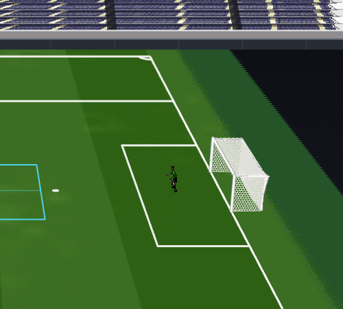
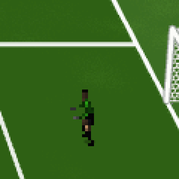
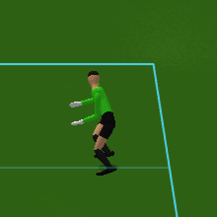
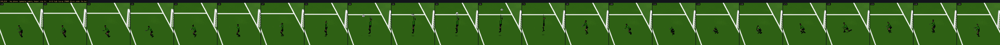
contact frames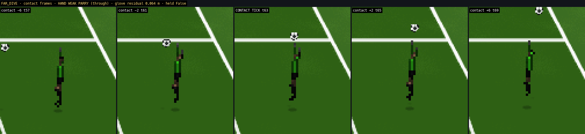
debug view (skeleton · contact target + glove IK · simulation root red cross vs presentation root violet ring · feet green planted / orange airborne)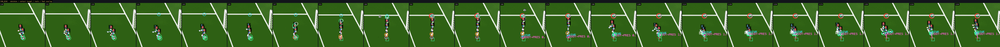
low sideways launch, body horizontal (never inverted), both arms down, side landing; this fixture is CAUGHT and the keeper gets up holding the ball · commit DIVE-LOW (LOW-DIVE REACHABLE) at tick 60 · contact: HAND / GATHER at tick 88, held True · phases: SHUFFLE_RIGHT@0 → CROSSOVER_RIGHT@13 → READ@34 → WEIGHT_SHIFT@39 → LOAD@44 → PREPARE@52 → LOAD@60 → PLANT@62 → PUSH_OFF@65 → TOE_OFF@67 → EARLY_FLIGHT@69 → MID_FLIGHT@75 → FULL_EXTENSION@82 → IMPACT@87 → ABSORB@90 → SETTLE@108 → BRACE@135 → PUSH_UP@153 → HALF_KNEEL@171 → CROUCH@192 → RISE@213 → REPOSITION@243 → SET@261
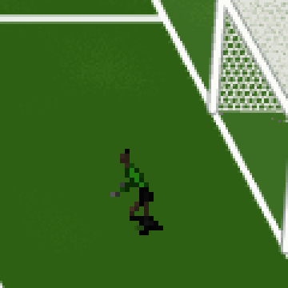
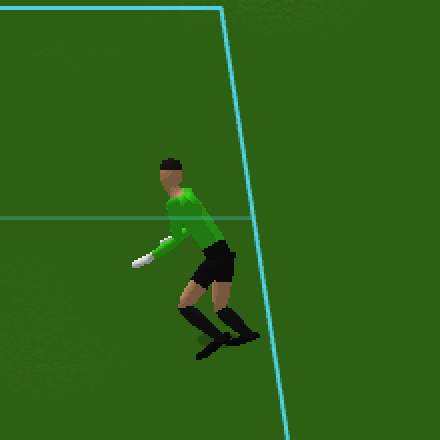
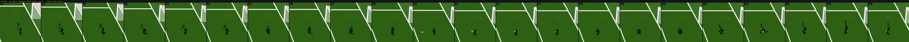
contact frames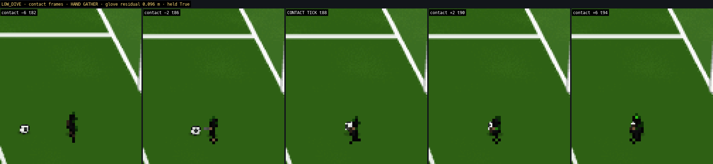
debug view (skeleton · contact target + glove IK · simulation root red cross vs presentation root violet ring · feet green planted / orange airborne)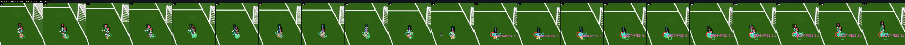
no flight: near leg folds, drop onto the hip, hands down together; caught here · commit DIVE-LOW (LOW-DIVE REACHABLE) at tick 49 · contact: HAND / GATHER at tick 76, held True · phases: SET_CROUCH@0 → READ@34 → WEIGHT_SHIFT@39 → LOAD@44 → DROP@59 → GROUND@69 → SETTLE@78 → BRACE@106 → PUSH_UP@124 → HALF_KNEEL@142 → CROUCH@163 → RISE@184 → REPOSITION@214 → SET@232
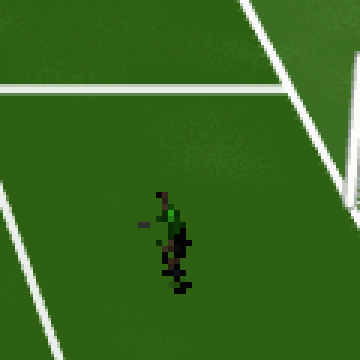
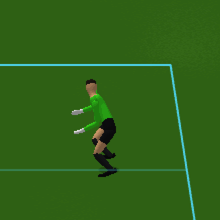
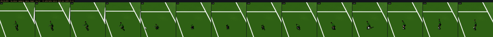
contact frames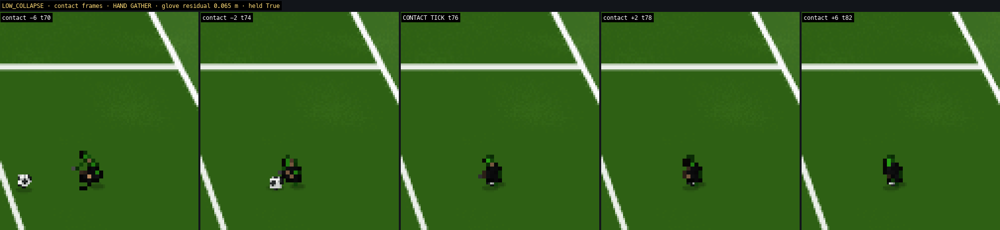
debug view (skeleton · contact target + glove IK · simulation root red cross vs presentation root violet ring · feet green planted / orange airborne)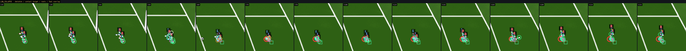
emergency block: COM drops, hips open, both legs spread laterally (far foot steps out to a wide plant), arms wide, saving foot on the simulation's leg tip; body commits onto the saving hip (side-sit) and recovers from the half-kneel · commit DIVE-LOW (LOW-DIVE REACHABLE) at tick 49 · contact: LEG- / FOOT SAVE at tick 72, held False · phases: SET_CROUCH@0 → READ@34 → WEIGHT_SHIFT@39 → LOAD@44 → DROP_LOAD@49 → HIP_OPEN@57 → SPREAD@65 → BLOCK@71 → ABSORB@76 → SETTLE@92 → HALF_KNEEL@113 → CROUCH@134 → RISE@155 → REPOSITION@185 → SET@203
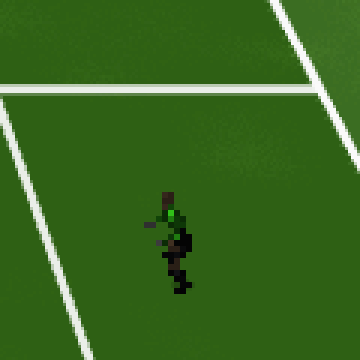
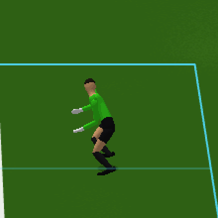
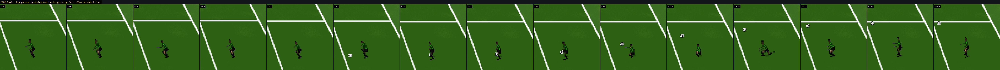
contact frames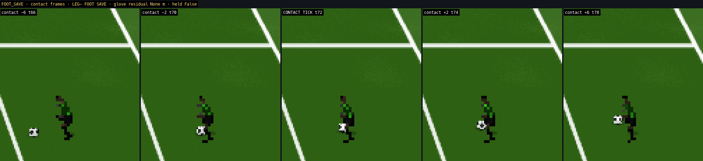
debug view (skeleton · contact target + glove IK · simulation root red cross vs presentation root violet ring · feet green planted / orange airborne)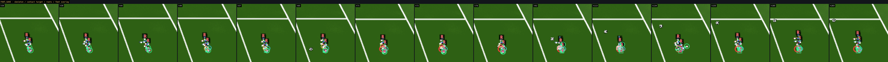
feet planted, one step out, torso lean, near-hand reach (parry here: RISE → SET) · commit LEAN (MEDIUM-DIVE REACHABLE) at tick 28 · contact: HAND / CONTROLLED PARRY at tick 38, held False · phases: READ@0 → WEIGHT_SHIFT@5 → LOAD@10 → PREPARE@18 → BRACE@27 → RECEIVE@31 → RISE@37 → SET@61
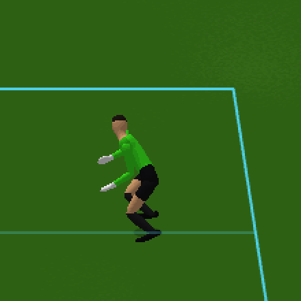
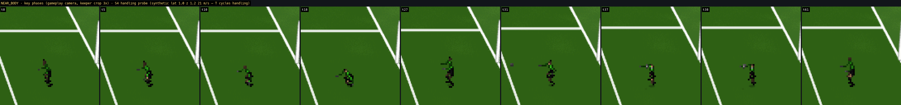
contact frames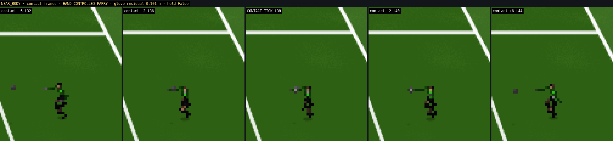
debug view (skeleton · contact target + glove IK · simulation root red cross vs presentation root violet ring · feet green planted / orange airborne)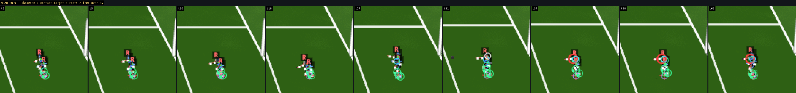
v10 sprite-language catch: upright ready, brace, arms receive, cradle, absorb, control, straighten, upright hold (held) · commit STANDING (STANDING REACHABLE) at tick 46 · contact: HAND / SUPPORTED CATCH at tick 54, held True · phases: READ@0 → READY@5 → PREPARE@18 → BRACE@45 → RECEIVE@48 → CRADLE@53 → ABSORB@61 → CONTROL@73 → STRAIGHTEN@82 → HOLD@112
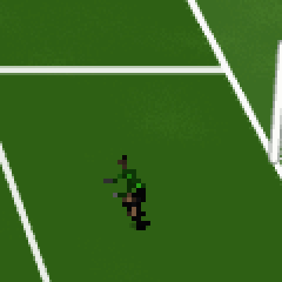
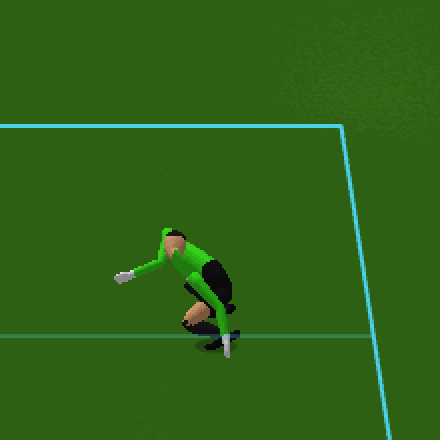
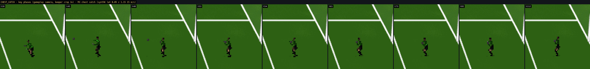
contact frames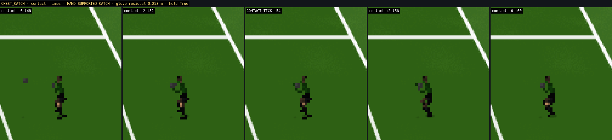
debug view (skeleton · contact target + glove IK · simulation root red cross vs presentation root violet ring · feet green planted / orange airborne)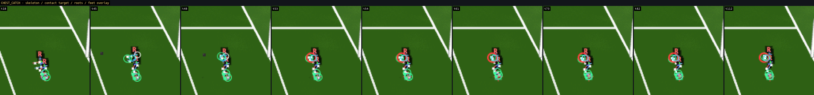
the same lifecycle on a lateral supported catch (held) · commit STANDING (STANDING REACHABLE) at tick 55 · contact: HAND / SUPPORTED CATCH at tick 63, held True · phases: READ@0 → WEIGHT_SHIFT@5 → LOAD@10 → PREPARE@18 → BRACE@55 → RECEIVE@58 → CRADLE@62 → ABSORB@70 → CONTROL@82 → STRAIGHTEN@91 → HOLD@121
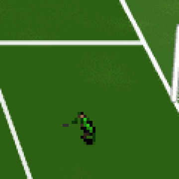
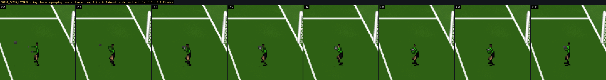
contact frames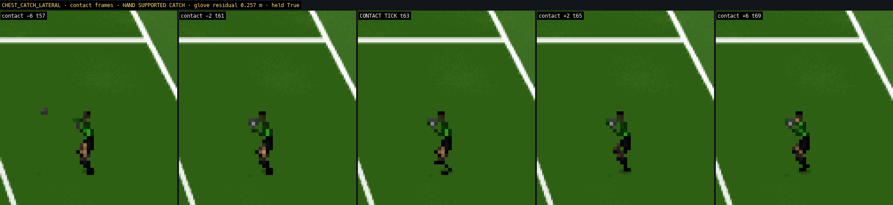
debug view (skeleton · contact target + glove IK · simulation root red cross vs presentation root violet ring · feet green planted / orange airborne)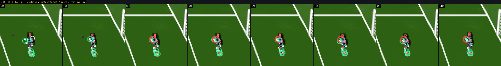
both hands up over the head, toe rise / jump by the launch demand; controlled parry: RISE → SET · commit STANDING (STANDING REACHABLE) at tick 43 · contact: HAND / CONTROLLED PARRY at tick 51, held False · phases: SET_CROUCH@0 → READ@28 → READY@33 → BRACE@43 → RECEIVE@47 → CONTACT@50 → RISE@52 → SET@79
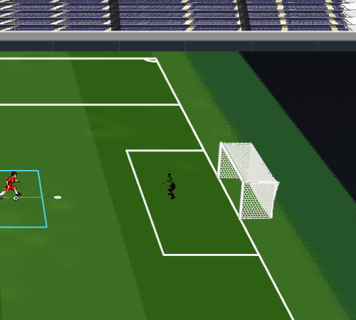
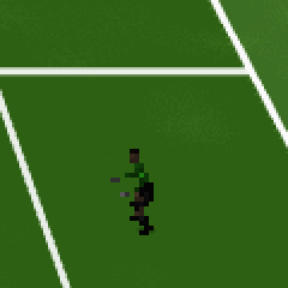
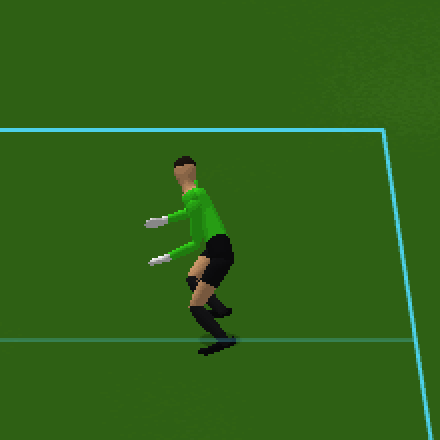
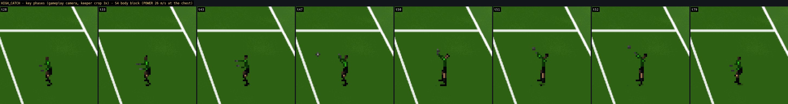
contact frames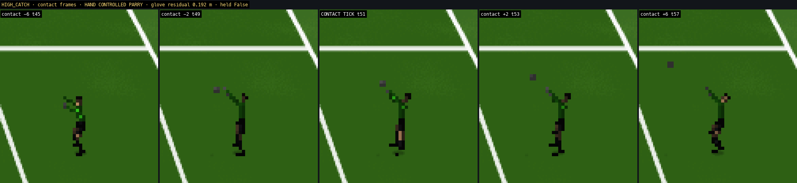
debug view (skeleton · contact target + glove IK · simulation root red cross vs presentation root violet ring · feet green planted / orange airborne)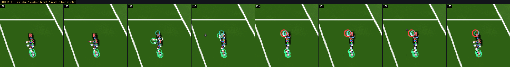
high central chip caught overhead, brought down to the chest, straighten, upright hold (held) · commit STANDING (STANDING REACHABLE) at tick 83 · contact: HAND / CATCH at tick 92, held True · phases: SET_CROUCH@0 → READ@21 → READY@26 → PREPARE@39 → BRACE@83 → RECEIVE@86 → CRADLE@91 → ABSORB@99 → CONTROL@117 → STRAIGHTEN@126 → HOLD@153
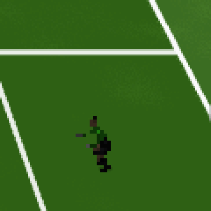
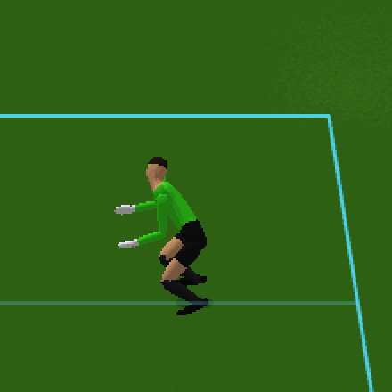
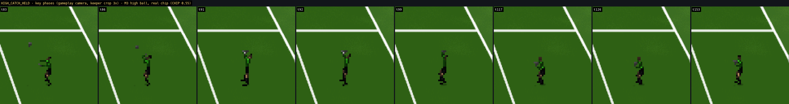
contact frames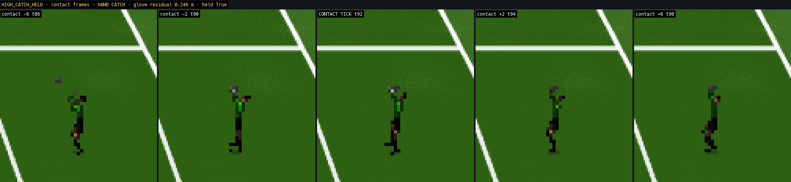
debug view (skeleton · contact target + glove IK · simulation root red cross vs presentation root violet ring · feet green planted / orange airborne)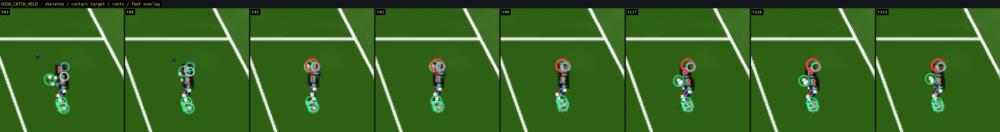
v10 sprite-language gather: deep crouch, gloves to the ground, scoop, clutch, rise to the upright hold (held) · commit GATHER (STANDING REACHABLE) at tick 61 · contact: HAND / GATHER at tick 88, held True · phases: SET_CROUCH@0 → READ@21 → READY@26 → PREPARE@39 → BRACE@61 → RECEIVE@66 → CONTACT@87 → CRADLE@88 → ABSORB@95 → CONTROL@109 → STRAIGHTEN@118 → HOLD@157
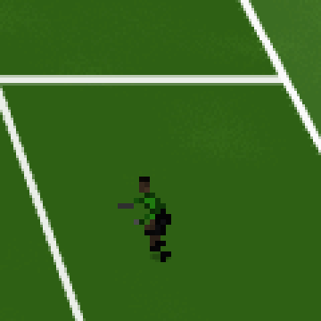
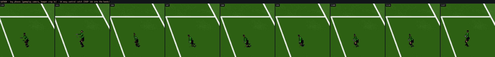
contact frames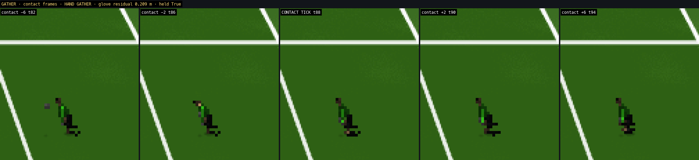
debug view (skeleton · contact target + glove IK · simulation root red cross vs presentation root violet ring · feet green planted / orange airborne)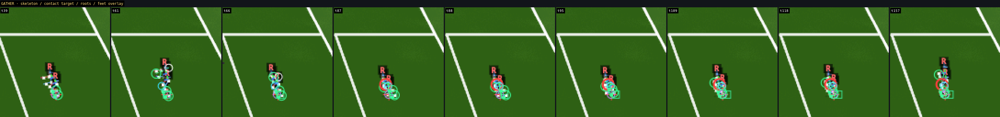
Root cause of the v10 arms: for a chest / supported catch the simulation's contact point is AT the chest (the ball touches the torso at the authoritative tick), so the rendered ball was at the chest the instant possession began and the two independent arm solves folded the elbows back through the torso to reach it. v11: the arms are solved as ONE coordinated cradle (skelCradleElbow / skelAimChain in ik.js): the hands are presented on a RECEIVING PLANE 0.28 m (0.20 m for a low ball) ahead of the authoritative contact point along the incoming ball line, either side of it (a ball's width + clearance apart), from u = 0.30 of the commit — the ball enters an open basket whose back wall is the chest; at the authoritative HELD tick the hands close from the receive plane onto the ball's sides (CRADLE, 0.12 s), then the cradle carries the rendered ball along a contained path catch point → chest pin (ABSORB), SECURE, STRAIGHTEN, HOLD. Each elbow is chosen on its reach circle (36 deterministic samples) along an out / down preference with the elbow, upper-arm midpoint and forearm midpoint required OUTSIDE a torso exclusion volume (pelvis → shoulders, ribcage half-width 0.20 m + 2 cm clearance, depth −0.13 / +0.12 m), never above the shoulder, never behind the back plane; the previous angle is kept when within 0.05 of the best (no side flips). Hands stay on opposing sides (left / right of the ball) — a crossing is a recorded violation; the wrist curls onto the ball surface. The rendered held ball is clamped outside the torso volume (a catch point the simulation places inside the body depth is pushed to the front face; the amount is exposed as ballClamp). The simulation ball, contact tick, held flag and outcome are read only.
Reference: sprite clips chest_catch / low_gather (assets/visual_v1/goalkeeper/GK_ANIM_V1.json). Low gather (v11): its own language — READY → DROP (hips low, torso ~40°, head on the ball) → SCOOP (hands down and FORWARD of the knees, palms to the ball, shoulders forward, the body behind the ball) → basket closes → SECURE (ball clutched into the abdomen while crouched) → RISE (0.65 s) → upright HOLD.
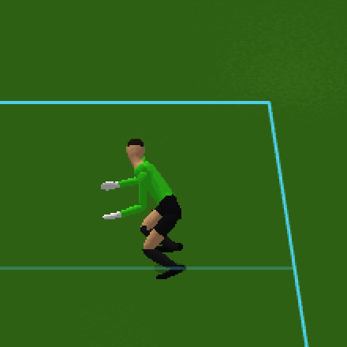
held-ball state at t142: spine pitch 13°, pelvis 0.85 m, hands→ball centre 0.15 / 0.15 m (surface 0.11), hand separation 0.28 m, elbow separation 0.81 m — unchanged to the end of the fixture. Cradle violations over the fixture (elbow / upper arm / forearm in the torso, crossing, ball in torso): 0 ticks. Max ball clamp out of the torso: 0.00 m.
held-ball state at t187: spine pitch 13°, pelvis 0.85 m, hands→ball centre 0.15 / 0.15 m (surface 0.11), hand separation 0.27 m, elbow separation 0.77 m — unchanged to the end of the fixture. Cradle violations over the fixture (elbow / upper arm / forearm in the torso, crossing, ball in torso): 0 ticks. Max ball clamp out of the torso: 0.00 m.
held-ball state at t151: spine pitch 13°, pelvis 0.85 m, hands→ball centre 0.15 / 0.15 m (surface 0.11), hand separation 0.28 m, elbow separation 0.81 m — unchanged to the end of the fixture. Cradle violations over the fixture (elbow / upper arm / forearm in the torso, crossing, ball in torso): 0 ticks. Max ball clamp out of the torso: 0.00 m.
held-ball state at t183: spine pitch 13°, pelvis 0.85 m, hands→ball centre 0.15 / 0.15 m (surface 0.11), hand separation 0.28 m, elbow separation 0.75 m — unchanged to the end of the fixture. Cradle violations over the fixture (elbow / upper arm / forearm in the torso, crossing, ball in torso): 0 ticks. Max ball clamp out of the torso: 0.00 m.
The v8 FOOT_SAVE (stand, lift the saving leg forward, retract) was rejected on visual review. v9 replaces the biomechanics: the centre of mass drops (pelvis 0.70 → ~0.46 m at contact), both hips abduct (saving thigh ~72°, far thigh ~60°, knees ~18° / ~30°), the far foot STEPS OUT to a wide plant (feet ~1.2 m apart at contact on the wide fixtures, ~0.9 m on the close ones), arms wide and a little forward, chest open to the shooter, head up on the ball; the saving foot meets the simulation's leg tip (lateral, ankle height — the simulation's own lead-leg model IS lateral); after the block the body commits onto the saving hip (velocity-continuous descent to a side-sit at 0.23 m, saving hand on the pitch, saving leg still extended) and recovers through the shared chain from the half-kneel. The saving leg never swings forward in the sagittal plane: its foot reaches the leg tip by hip abduction. Camera note: the keeper's lateral axis (along the goal line) runs INTO the Touchline camera at a straight facing, so a lateral spread projects as depth (near foot low, far foot high behind the body); at angled facings (fixtures 57–60) the same 3D spread projects as width. Nothing about the spread was rotated toward the camera — the geometry is the simulation's.
Full gameplay-camera loop, key phases and skeleton overlay of the new motion: canonical motion entry above.
| shot | side / landed | facing | contact (volume / outcome) | leg residual | phases |
|---|---|---|---|---|---|
| 19 | RIGHT / RIGHT | 74° | tick 30 · LEG+ / LEG DEFLECTION | None | DROP_LOAD@43 → HIP_OPEN@55 → SPREAD@67 → ABSORB@83 → SETTLE@98 → HALF_KNEEL@119 → CROUCH@140 → RISE@161 → REPOSITION@191 → SET@209 |
| 44 | RIGHT / RIGHT | 90° | tick 18 · LEG+ / LEG DEFLECTION | None | DROP_LOAD@28 → HIP_OPEN@45 → SPREAD@62 → ABSORB@85 → SETTLE@101 → HALF_KNEEL@122 → CROUCH@143 → RISE@164 → REPOSITION@194 → SET@212 |
| 50 | RIGHT / RIGHT | 160° | none (ball missed the leg) | None | DROP_LOAD@28 → HIP_OPEN@36 → SPREAD@43 → ABSORB@54 → SETTLE@70 → HALF_KNEEL@91 → CROUCH@112 → RISE@133 → REPOSITION@163 → SET@181 |
| 53 | LEFT / LEFT | 154° | tick 97 · HAND / GATHER | 0.023 | DROP_LOAD@75 → HIP_OPEN@81 → SPREAD@88 → ABSORB@96 → SETTLE@112 → HALF_KNEEL@133 → CROUCH@154 → RISE@175 → REPOSITION@205 → SET@223 |
| 59 | RIGHT / RIGHT | 80° | tick 15 · LEG+ / LEG DEFLECTION | None | DROP_LOAD@28 → HIP_OPEN@46 → SPREAD@65 → ABSORB@90 → SETTLE@106 → HALF_KNEEL@127 → CROUCH@148 → RISE@169 → REPOSITION@199 → SET@217 |
| 95 | RIGHT / RIGHT | 77° | tick 15 · LEG+ / LEG DEFLECTION | None | DROP_LOAD@28 → HIP_OPEN@54 → SPREAD@81 → ABSORB@116 → SETTLE@132 → HALF_KNEEL@153 → CROUCH@174 → RISE@195 → REPOSITION@225 → SET@243 |
| 104 | LEFT / LEFT | -76° | tick 15 · LEG- / LEG DEFLECTION | None | DROP_LOAD@28 → HIP_OPEN@54 → SPREAD@80 → ABSORB@114 → SETTLE@130 → HALF_KNEEL@151 → CROUCH@172 → RISE@193 → REPOSITION@223 → SET@241 |
| 127 | RIGHT / RIGHT | -153° | tick 61 · LEG- / FOOT DEFLECTION | 0.095 | DROP_LOAD@41 → HIP_OPEN@49 → SPREAD@57 → BLOCK@61 → ABSORB@68 → SETTLE@84 → HALF_KNEEL@105 → CROUCH@126 → RISE@147 → REPOSITION@177 |
| 136 | RIGHT / RIGHT | -177° | tick 116 · HAND / GATHER | 0.029 | DROP_LOAD@90 → HIP_OPEN@98 → SPREAD@106 → BLOCK@116 → ABSORB@117 → SETTLE@133 → HALF_KNEEL@154 → CROUCH@175 → RISE@196 → REPOSITION@226 |
Record: FREEPLAY_3d_160_shots_seed11.json.
| fixture | motion | body | H (m) | contact | glove residual (m) | leg-tip residual (m) | held-hands residual (m) | sim root at contact |
|---|---|---|---|---|---|---|---|---|
| 42 S4 K2 high tip-up (POWER 28 m/s un | FAR_DIVE | default | 1.900 | HAND/WEAK PARRY (through) | 0.064 | None | None | [101.986, 33.45] |
| 42 S4 K2 high tip-up (POWER 28 m/s un | FAR_DIVE | tall | 2.014 | HAND/WEAK PARRY (through) | 0.015 | None | None | [101.986, 33.45] |
| 42 S4 K2 high tip-up (POWER 28 m/s un | FAR_DIVE | short | 1.786 | HAND/WEAK PARRY (through) | 0.147 | None | None | [101.986, 33.45] |
| 44 M3 low dive RIGHT, hand (synthK la | GATHER | default | 1.900 | HAND/GATHER | 0.022 | None | 0.045 | [101.493, 32.975] |
| 44 M3 low dive RIGHT, hand (synthK la | GATHER | tall | 2.014 | HAND/GATHER | 0.023 | None | 0.054 | [101.493, 32.975] |
| 44 M3 low dive RIGHT, hand (synthK la | GATHER | short | 1.786 | HAND/GATHER | 0.024 | None | 0.045 | [101.493, 32.975] |
| 24 just beyond foot (hand) | LOW_COLLAPSE | default | 1.900 | HAND/GATHER | 0.087 | 0.173 | 0.594 | [101.375, 33.389] |
| 24 just beyond foot (hand) | LOW_COLLAPSE | tall | 2.014 | HAND/GATHER | 0.1 | 0.198 | 0.568 | [101.375, 33.389] |
| 24 just beyond foot (hand) | LOW_COLLAPSE | short | 1.786 | HAND/GATHER | 0.079 | 0.15 | 0.595 | [101.375, 33.389] |
| 16 at left foot (low) | FOOT_SAVE | default | 1.900 | HAND/GATHER | None | 0.072 | 1.093 | [101.182, 33.872] |
| 16 at left foot (low) | FOOT_SAVE | tall | 2.014 | HAND/GATHER | None | 0.086 | 1.234 | [101.182, 33.872] |
| 16 at left foot (low) | FOOT_SAVE | short | 1.786 | HAND/GATHER | None | 0.06 | 0.975 | [101.182, 33.872] |
| 26 S4 easy central catch (CHIP lob in | GATHER | default | 1.900 | HAND/GATHER | 0.028 | None | 0.043 | [101.102, 34] |
| 26 S4 easy central catch (CHIP lob in | GATHER | tall | 2.014 | HAND/GATHER | 0.027 | None | 0.047 | [101.102, 34] |
| 26 S4 easy central catch (CHIP lob in | GATHER | short | 1.786 | HAND/GATHER | 0.032 | None | 0.044 | [101.102, 34] |
| 31 S4 body block (POWER 26 m/s at the | HIGH_CATCH | default | 1.900 | HAND/CONTROLLED PARRY | 0.04 | None | None | [101.408, 34] |
| 31 S4 body block (POWER 26 m/s at the | HIGH_CATCH | tall | 2.014 | HAND/CONTROLLED PARRY | 0.073 | None | None | [101.408, 34] |
| 31 S4 body block (POWER 26 m/s at the | HIGH_CATCH | short | 1.786 | HAND/CONTROLLED PARRY | 0.041 | None | None | [101.408, 34] |
| 33 S4 lateral catch (synthetic lat 1. | CHEST_CATCH | default | 1.900 | HAND/SUPPORTED CATCH | 0.094 | None | 0.172 | [101.739, 35.044] |
| 33 S4 lateral catch (synthetic lat 1. | CHEST_CATCH | tall | 2.014 | HAND/SUPPORTED CATCH | 0.108 | None | 0.187 | [101.739, 35.044] |
| 33 S4 lateral catch (synthetic lat 1. | CHEST_CATCH | short | 1.786 | HAND/SUPPORTED CATCH | 0.087 | None | 0.168 | [101.739, 35.044] |
| 41 S4 handling probe (synthetic lat 1 | NEAR_BODY | default | 1.900 | HAND/CATCH | 0.065 | None | 0.525 | [101.739, 34.605] |
| 41 S4 handling probe (synthetic lat 1 | NEAR_BODY | tall | 2.014 | HAND/CATCH | 0.091 | None | 0.554 | [101.739, 34.605] |
| 41 S4 handling probe (synthetic lat 1 | NEAR_BODY | short | 1.786 | HAND/CATCH | 0.041 | None | 0.513 | [101.739, 34.605] |
Reading: ground and standing saves are height-independent (the hands reach a ground / chest ball from any body). The far dive is the reach-envelope case: the SIMULATION decides reachability for its own 1.90 m keeper; a 6 % shorter presentation body cannot reach the same hand point (14.7 cm residual) — exposed, not stretched. A production character must be built at the simulation keeper's height; variants are stress tests.
| committed | with contact | family → motion | facings (45° bins) | fallback selections | unauthored ticks | dive side ≠ landed side | shots with a continuity flag |
|---|---|---|---|---|---|---|---|
| 114 | 40 | AIRBORNE_DIVE → FAR_DIVE: 71 AIRBORNE_DIVE → LOW_DIVE: 13 LOW_GATHER → GATHER: 5 LOW_COLLAPSE → LOW_COLLAPSE: 2 NEAR_BODY_SAVE → NEAR_BODY: 6 HIGH_CATCH → HIGH_CATCH: 17 | -180°: 16, -135°: 28, -90°: 7, -45°: 5, 0°: 3, 45°: 6, 90°: 16, 135°: 21, 180°: 12 | 0 | 0 | 0 | 1 |
Frames at the contact tick for a sample of the shots (gameplay camera, 1:1) — family / motion / side / facing / outcome / glove residual:
Full record: FREEPLAY_3d_120_shots_seed7.json. Continuity flags in free play: shot 74 LOW_DIVE IMPACT→ABSORB (Δv 1.52 m/s, excess 0.025 m)
| symptom (free-play shot) | cause | resolution |
|---|---|---|
| LOW_DIVE: FULL_EXTENSION → IMPACT → CONTACT → IMPACT (shot 76) | a contact that moved endT later re-entered the execution branch after the post phase had begun | the post phase is one-way (state.postT0); a dive's execution ends at the planned arrival (launch.tE) even when the contact extends endT |
| LOW_DIVE pelvis stop in one frame at the ground (dV 1.9 m/s), dip below the ground height and bounce (shot 116) | the arc arrived already at the lying height: the impact hermite had no height left to absorb the fall | lowStop: the hip stops over the height that is left with uniform deceleration to the ground height (impact time = 2·Δh/|v|), one fold from the flight pose through impact / absorb to the settle |
| elbow flips of 40–55 cm in one frame while the wrist barely moved (shot 116) | two-bone IK bend plane through its degenerate zone (elbow on the shoulder→target line) and a target 9 cm from the shoulder, inside the arm's fold radius | skelIK2 keeps a per-chain bend-plane memory (degenerate plane → last frame's; the plane may rotate at most 60° per solve); a target inside the fold radius releases the solve toward the authored limb and reports the residual (the modeled arm cannot fold onto its own shoulder) |
| ground-side leg swept through the hip at 30–70 cm per frame during the low-dive landing (shot 116) | the simulation's leg-tip model lies on the opposite side of the hip from the authored trailing leg; a weighted IK target lerps straight through the hip | LOW_DIVE no longer chases the simulation leg tip (FOOT_SAVE / LOW_COLLAPSE keep it: same side as the authored leg); a leg-volume contact in a low dive is shown on the authored leg and the mismatch is exposed |
| second hand jumped 30–48 cm when the held-ball IK replaced the two-hand reach (shot 116) | the two IK passes were exclusive (either / or) with different targets and weights | the two-hand reach hands over to the hold (weight 1 − holdW) and the hold fades in over 0.12 s from the first held tick, out over 0.15 s after the release |
| 7 cm pelvis pop at PUSH_UP → HALF_KNEEL (shot 5) | the tucked feet were planted at the settle start while the body was still sliding (28 cm); the tuck points ended beyond the leg's reach and the kneel re-plant re-solved the leg under the pitch (ground clamp lifted the pelvis) | a tucked foot follows a body still sliding at the settle: re-plant (drag, no step lift) once the hips have slid more than 15 cm past the planted feet — the approved v6 far dive slides ~9 cm there and is untouched |
| 4.4 cm root cut at RISE → SET (shot 93) | a drift below one shuffle step (no REPOSITION steps) was applied at the SET cut | recovered during the rise onto the feet (a weight shift) |
| ground clamp lost the floored leg after a pelvis lift (frame-to-frame alternation) | the pelvis lift re-ran FK and stopped; the legs were floored only when no body bone was deeper | legs are floored again after a lift (up to 6 passes) |
The frozen v6 far dive keeps its own solve paths exactly: its glove / brace / plant / floor solves run without the bend-plane memory (PMv), every other motion gets it. Verified after every one of these changes: fixture 42 skeleton (28 joints × 320 ticks) bit-identical to the pre-change manifest. Remaining per-frame limb motion in the flagged shots is ≤ 25 cm (an elbow orbiting under the 60° plane cap during the hold, shuffle-step knees), no stage-boundary flag remains in the 120-shot run.
asserts) and per shot in the free-play record.Reproduce: .venv/bin/python server.py (:8000) and python3 sandbox/visual/serve_match.py (:8124); captures node sandbox/visual/tools/anim3d/capture.js --backend 3d --scenario N --ticks 0-319 --out DIR --crop 0 --clip 600,150,500,450 (add --dbg bones,ik,roots,feet for the debug view, --crop 2 --zoom 3.5 --camx 98 --pixel 1 --outline 0 --bands 6 for the close normal-3D view); gates gk3d_gate.js --backend sprite|3d --scenarios all --ticks 260 and gk_anim/gk_anim_gate.js --anim off; free play gk3d_freeplay.js --shots 120 --seed 7; manifest gk_motion_manifest.js --scenarios …; Astra package build_astra_package.py.